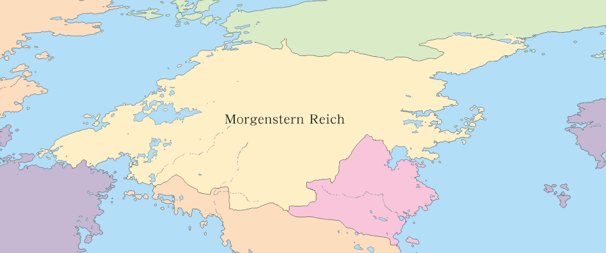

蒙恩斯丹帝國（德語：Morgenstern Reich）即「晨星帝國」，是位於北蒙的封建君主制國家，為多民族國家，遼闊的國土之中孕育了數萬不同民族的血脈。
在封建制度之下，領主有廣大的領土及封臣，並擁有自己的軍事武力，直到雅德三世繼位後，開始積極擴張領土，同時削弱領主的權力。 十年戰爭後，雅德三世廢除國王頭銜，禁止封地以國命名，實施君主專制並取消封臣制度，使統御的權力回到中央。此後全境領土為中央直轄，不再有半獨立的領地。
蒙恩斯丹帝國（德語：Morgenstern Reich）即「晨星帝國」，是位於北蒙的封建君主制國家，為多民族國家，遼闊的國土之中孕育了數萬不同民族的血脈。
在封建制度之下，領主有廣大的領土及封臣，並擁有自己的軍事武力，直到雅德三世繼位後，開始積極擴張領土，同時削弱領主的權力。 十年戰爭後，雅德三世廢除國王頭銜，禁止封地以國命名，實施君主專制並取消封臣制度，使統御的權力回到中央。此後全境領土為中央直轄，不再有半獨立的領地。
蒙恩斯丹帝國位於北半球，國土面積約為九百八十二萬平方公里，有近八千萬的人口，首都為洛寧（又稱王城），通用貨幣為德墨。

經歷多次修法，封建制度嚴謹的契約精神已逐漸淡化，現今有些條目已被廢除或不再生效，目前帝國的體制概況可總歸為以下四點。
| 一、 二、 三、 四、 |
共皇帝、親王、公爵、侯爵、伯爵、子爵、男爵、騎士、平民、奴隸十個階級。 貴族、騎士受封領地者為領主，必須宣誓效忠皇室並維護領地內的秩序，即領主在受封同時獲得地方自治權，惟皇室對各級封地皆享有最終管治權。 領主多半兼任軍事職務，所有貴族都有從軍之義務，農夫、商人等平民與奴隸則否。 所有軍事單位皆直屬中央管理，再分發至各級封地，協助領主管理的同時也制約領主的權力。 |
主條目：蒙恩斯丹帝國行政機關
蒙恩斯丹帝國全境由中央直轄，中央分封領地給各級貴族的同時授予地方自治權，並分派軍事單位與警務人員來協助地方政府進行管理， 同時也監督領主是否謹守中央的規範，而中央軍事要職則多由各級領主後嗣（即勳爵）擔任。帝國的立法機關為國會，包含貴族組成的上議院以及平民組成的下議院，權力則源於君臨國會。
主條目：蒙恩斯丹帝國法規
蒙恩斯丹帝國的法律分為憲章、法律、命令三個層級，所有規範皆不可違背在其上位階的規定。
國父安塔納西奧斯建國之初，其皇后絲忒拉在巨冰上刻寫下十六條約作為基本法則，後人以此編纂出帝國的原初法律《冰鏡法》。
在第四任皇帝萊昂一世任內頒布了以《冰鏡法》為基準編寫的《蒙恩斯丹帝國憲章》，此為帝國的基本法以及國家最高法規。
蒙恩斯丹帝國主要地區含有一個王城、五個都城、九個公爵領、十七個侯爵領，餘下部分為小爵之領地，有些則包含於大爵領地之內。
| 地區 | 類別 | 領主 | 說明 |
|---|---|---|---|
| 洛寧 | 王城 直屬地 |
- | 皇宮的所在地，蒙恩斯丹帝國的首都，為帝國的金融中心，雖然面積不大，卻是整個帝國的中樞。 |
| 萊斯同 | 都城[註1] 公爵領 |
柯尼希 | 坐落於蒙恩斯丹帝國的東南一帶，緊鄰洛寧，土地面積廣大，為僅次於首都的繁榮都城， |
| 克里斯坦 | 都城 公爵領 |
朔伊布勒 | 位於蒙恩斯丹帝國東岸，領地內有綿長的海岸線，發展出了通達的沿岸貿易，具有多處大型的貿易商港，是蒙國發展國際貿易的重要窗口。 |
| 蓋德 | 都城 公爵領 |
恩格斯 | 位於蒙恩斯丹帝國的東北一帶，為商業之都， |
| 諾登 | 都城 公爵領 |
艾斯貝格 | 位於蒙恩斯丹帝國的東北角，東接鄰國的高聳山脈，氣候較為寒冷，山區不宜人居，土地雖廣闊人口卻相當集中。 |
| 表格真的好難寫QQ 之後繼續打，樣式也之後再弄 | |||
註1：都城為原王國，後雅德三世降國王為公爵，並將封地名稱中的國改去[註2]，但其領地規模仍遠超過原為公國的公爵領，是國境內較為繁華的都邑。
註2：受影響的有原王國、公國及侯國，目前公爵、侯爵、伯爵、子爵、男爵、騎士對應封建領地名稱為公爵領、侯爵領、伯爵領、子爵領、男爵領、騎士封地。
蒙恩斯丹帝國現任皇帝為瓦爾德馬，其任命執行官為烏列爾，獨裁官為米迦勒，
雅德三世在十年內戰時，現在的大貴族多為雅德三世任內受封的，